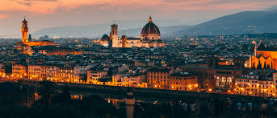

ITALIA
Italia es un país con una cultura rica, paisajes inolvidables y una de las cocinas más influyentes del mundo. Desde sus pastas artesanales hasta sus postres dulces y elegantes, cada plato cuenta una historia de tradición y pasión.
Gastronomia
La gastronomía italiana es mucho más que pizza y pasta. Es una expresión de identidad, historia y amor por los ingredientes frescos. Cada región tiene sus propias recetas y secretos
"Cada comida es una celebración"
En este recorrido por los sabores de Italia, vas a encontrar entradas tradicionales, platos principales como la lasaña y pizza, y postres que enamoran como el tiramisú. ¡Benvenuto!